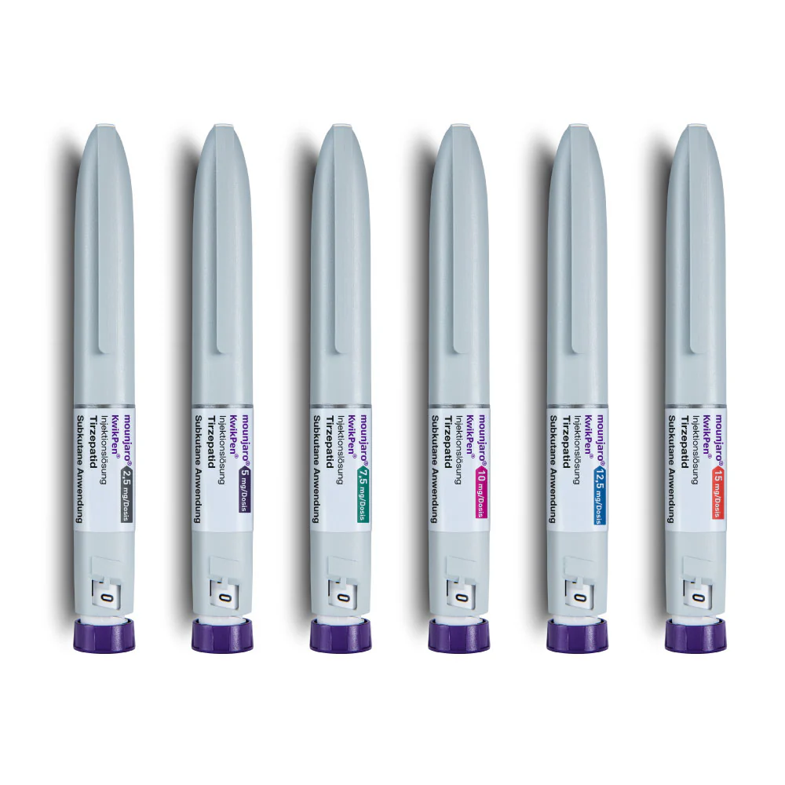

✔ 刺激胰島素分泌以調控血糖
連帶維持與生成胰島細胞
猛健樂是一種已被美國FDA核准用於二型糖尿病患者，並在歐美區取得減重適應症的藥劑。因為外觀也是筆型注射器，因此也廣為被患者視為是「瘦瘦筆」中的一員。
它在2023年4月30日，被台灣衛福部食藥署(TFDA)核准適應症：作為飲食及運動療法之外的輔助治療，用於改善第二型糖尿病成人病人之血糖控制（可單一療法或與其他糖尿病治療藥物合併使用）。2025年也通過其最新的適應症：「肥胖與過重之體重控制」。
若您有體重控制需求，且想同步控制血糖、並且一周只想施打一次的話，猛健樂就是您的最佳選擇！
猛健樂為禮來藥廠研發之腸泌素針劑 Tirzepatide（商品名Mounjaro，中文商品名猛健樂），是一種每週一次的皮下注射藥物。它最初用於改善第二型糖尿病成人患者的血糖控制，後來也被用於體重管理。
猛健樂與胰妥讚（Ozempic）在使用上類似，每週只需注射一次，並且是目前全球「首個」雙重腸泌素GLP-1和GIP受體促效劑。結合GLP-1（腸泌素）和GIP（葡萄糖依賴性胰島素增強多肽）的作用，進行有效率的能量代謝，改善血糖血脂，達到心血管健康效益，滿足飽足感，減少過量進食，是目前市面上最新的類似藥物。
其療效簡單地說：除了幫助身體更聰明地分泌胰島素，用於治療第二型糖尿病；它的雙重機制，還能降低食慾、改善脂肪代謝，所以目前在台灣申請的適應症為：血糖控制、肥胖與過重之體重控制。
血糖控制 作為飲食及運動療法之外的輔助治療，用於改善第二型糖尿病成人病人之血糖控制。 說明: MOUNJARO可做為單一療法或與其他糖尿病治療藥物合併使用。
肥胖與過重之體重控制 (1) 做為低熱量飲食及增加體能活動之輔助療法，適用對象為成人且初始身體質量指數(BMI)為 ≥ 30 kg/m2(肥胖)，或 ≥ 27 kg/m2至 < 30 kg/m2 (過重)且至少患有一項體重相關共病，例如高血壓、血脂異常、糖尿病前期或第二型糖尿病、阻塞性睡眠呼吸中止或心血管疾病。(2) 做為低熱量飲食及增加體能活動之輔助療法，適用於具有中度至重度阻塞性睡眠呼吸中止症且身體質量指數(BMI) ≥ 30 kg/m2之成人，改善睡眠呼吸中止的嚴重程度。
猛健樂（Mounjaro）與一般民眾常常聽到的「瘦瘦筆」胰妥讚（Ozempic）、善纖達（Saxenda）類似，這類的藥品，主要的成分都是透過模擬GLP-1的結構進而刺激胰島素產生，減少昇糖素分泌來調節血糖、延緩胃部排空，使食物停留在胃部的時間拉長以增加飽足感；此外，還能影響腦部中樞，抑制飢餓感，以達到控制體重的效果。
而猛健樂的主要成分為Tirzepatide，這個成分跟以往瘦瘦筆中的成分最大的不同點在於，它是目前全球「首個」雙重腸泌素GLP-1和GIP受體促效劑，除了作用在上述所說的GLP-1受體外，也會作用在GIP受體。
所謂的雙重腸泌素GLP-1和GIP受體促效劑，它的原理是：
在人體進食後，透過藥劑使小腸細胞分泌腸泌素 (Incretin) 來提升飽足感、調節能量儲存與代謝。因此，猛健樂並不是只讓人進食變少，更是加強我們人體既有的代謝模式。
功效：
✔ 刺激胰島素分泌以調控血糖
連帶維持與生成胰島細胞
✔ 血糖盈餘會以甘油方式在脂肪組織儲存
減少轉化為脂肪酸，減少脂肪新生
✔ 脂肪則會順利被白色脂肪組織攝取，避免異位脂肪形成
最終避免內臟脂肪形成
簡單來說，除了幫助身體更聰明地分泌胰島素，用於治療第二型糖尿病以外；透過它獨特的雙重機制，還能降低食慾、改善脂肪代謝，所以目前在台灣申請的適應症為：糖尿病控制和體重控制輔助療法。
每週一次：每週只需注射一次（在一星期中固定某一天進行施打），每支猛健樂有 4 個固定劑量，因此每支猛健樂可施打四週
洗淨雙手：注射前洗淨雙手
事先排氣：注射前將筆型注射器，轉到長橫線進行排氣，聽到兩次「喀」聲，並在視窗看到長橫線
酒精消毒：使用酒精消毒欲注射的部位
切勿搓揉注射處：注射後不要搓揉注射處，以免影響藥物吸收
皮下注射：需注射於皮下
注射部位：腹部或大腿上部
部位輪替：可將腹部及大腿上部個分成4個區域(共8個區域)，每次輪替注射在不同區域，不要連續施打於相同區域，且距離上次注射位置至少一個手指寬
遠離肚臍：若在腹部區域注射，必須距離肚臍至少 5 公分
不管是為了體重控制還是血糖控制，猛健樂的建議劑量皆是從每週 2.5 mg起，並每四週增加 2.5 mg，直到達到每週 15 mg為止。
※實際用量務必經過專業醫師評估並視每不同病患之狀況調整，此處僅為初步參考。

在猛健樂療程中，若出現輕微副作用（例如：噁心、胃部不適、腹瀉等），患者需要及時與醫療專業人員進行溝通，以確保能即時調整劑量。
噁心約 12 – 18%
腹瀉約 12 – 17%
食慾降低約 5 – 11%
嘔吐約 5 – 9%
消化不良約 5 – 8%
便秘約 6 – 7%
腹痛約 5 – 6%
注射部位若產生發紅、腫脹、發燙、疼痛等現象，請立即透過官方 Line 與我們聯絡
可以在一天中任意時間使用，使用時間不分飯前飯後
應固定頻率、每週的同一天使用猛健樂，例如：固定每週一早上 8:00 使用
若要改變注射日，兩劑之間最短要相隔 3 天以上
忘記施打，可以在 4 天（ 96 小時）內補打 1 次
若超過 4 天忘記施打，請直接跳過這次，直接在下一次施打時間使用，不可以多打
懷孕或哺乳、預備懷孕的婦女請勿使用
有藥物過敏者，須事先徵詢醫師意見
若有肝、腎功能不全、胰臟炎、膽囊炎、嚴重胃腸疾病（如嚴重胃輕癱）、甲狀腺疾病者，需經由醫師特別評估是否適合使用
個人或是家族有甲狀腺髓質癌 ( MTC ) 病史的病人或第二型多發性內分泌腫瘤綜合症 ( MEN 2 ) 者避免使用
已知對 tirzepatide 或猛健樂的任何賦形劑嚴重過敏反應者，請避免使用
不建議與其他含有Tirzepatide的藥品或任何升糖素類似胜肽-1 (GLP-1)受體促效劑併用
絕不可共用猛健樂注射筆
「穩定體態，降低糖胖風險，就是守護私泌健康與維持良好性功能的第一步！」
猛健樂（Mounjaro）是一項結合「體重控制」與「糖尿病管理」的劃時代藥品。透過GLP-1與GIP的雙重作用，它不僅幫助改善血糖與內臟脂肪，還能延緩三高進展。
無論您是因為糖胖問題導致性功能出現問題，又或是 BMI 過重導致無法手術，津久的主治醫師群會陪您一起克服困難，找回健康！
*若您有以上問題和需求，請親自到津久診所諮詢以完整了解療程與可能的副作用。
建議：勿透過醫療院所以外的管道自行購買來源不明所謂「瘦瘦筆」、「網拍水貨」、「日本版ＸＸ筆」，其中可能成分錯誤、保存不當，危及健康且違法。
『創造非凡精彩人生』
健康，其實是一個動詞，需要通過努力與踏實砌成的動詞，很多人會說奮鬥不一定會成功，但我們要說：「不奮鬥，絕對失敗」只有奮鬥過的人生，才能不留遺憾、才能更加精彩也才能至善至美。

『捍衛男性泌密健康』
泌密健康，就四個字，但它並不會讓你一輩子都過得那麼容易，轉機就在於你堅強的那一刻，你的人生，會因為你的泌密健康，過得更性福美滿，也過得更加精彩

【本資訊無法取代醫師親自關心您；若有副作用等使用問題，請洽醫師諮詢。】
【本網頁以介紹醫療新知與衛教宣導為目的，非為廣告內容，並依據衛部藥輸字第 028466 號仿單說明。詳細療程效果與方式等資訊，需以醫師親自說明為準。】
津久診所 台北市中山區松江路276號3樓
捷運 橘線(中和新蘆線)行天宮站的4號出口，出站後右轉步行40秒就可以看到津久診所的大招牌，搭電梯上3樓。
開車 1.台灣聯通停車場-將捷二場(停車塔，眾多信用卡可停車折抵): 台北市中山區松江路336號 2.聯邦佳佳大樓停車場(地下平面停車場): 台北市中山區松江路235巷22號
坐公車 1.捷運行天宮站(松江路) 109,1550A,203,214, 214直,222,26,277,279,280,280直,41,49,5,5203A,612,676,9069,9069A,945, 松江新生幹線,林口-台北長庚醫院,紅57 2. 松江新村 214, 214直,286副,49,9069,9069A,945 3. 民權松江路口 1841,1841A,1842,1842A,225,225區,5250,5250A,617,617副,63,685,688,801,803,內科通勤專車18,敦化幹線，民權幹線,紅29,紅31